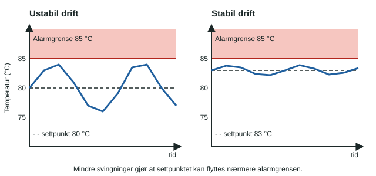

Optimalisering
Et anlegg som går stabilt og trygt, kan nesten alltid bli enda bedre. Det kan lage litt mer av det samme råstoffet, bruke litt mindre energi eller gi litt mindre avfall. Små forbedringer i et anlegg som går døgnet rundt, blir til mye over et helt år.
Hva er optimalisering?
Optimalisering er å forbedre en prosess så den gir mer produkt, bedre kvalitet, mindre sløsing eller lavere energibruk. Målet er å få mest mulig ut av råstoffet, energien og utstyret, uten å gå på bekostning av sikkerhet og miljø.
Eksempler på hva som kan forbedres:
- Mer produkt av samme råstoff: høyere utbytte, mindre svinn og færre partier som må kasseres eller kjøres om igjen.
- Mindre energi: for eksempel bedre isolasjon, bedre varmeveksling eller riktig turtall på pumper og vifter.
- Jevnere kvalitet: færre prøver utenfor spesifikasjonen.
- Færre stopp: mindre tid der anlegget står stille uten at det var planlagt.
- Mindre utslipp og avfall: Utslippstillatelsen setter grenser for hva bedriften får slippe ut, og mindre avfall sparer både råstoff og penger.
Mål med nøkkeltall
For å vite om en endring gjorde prosessen bedre, må du kunne måle det. Bedriften følger derfor med på noen få viktige tall, som kalles nøkkeltall. Vanlige nøkkeltall i et prosessanlegg er:
- Utbytte: hvor stor del av det mulige produktet du faktisk får. Det lærer du å regne ut i Resirkulering og utbytte.
- Energiforbruk per tonn produkt: hvor mye energi det går med til å lage ett tonn.
- Andel innenfor spesifikasjon: hvor stor del av produktet som holder kravene.
- Regularitet: hvor stor del av tiden anlegget går som planlagt.
Mange nøkkeltall regnes per tonn produkt. Da kan du sammenligne en uke med høy produksjon med en uke med lav produksjon.
Oppgave: I uke 12 lagde anlegget 800 tonn produkt og brukte 2 400 MWh energi. I uke 13 ble en varmeveksler rengjort, og anlegget lagde 1 000 tonn og brukte 2 500 MWh. Hvilken uke brukte energien best?
Løsning:
- Uke 12: 2 400 MWh / 800 tonn = 3,0 MWh per tonn.
- Uke 13: 2 500 MWh / 1 000 tonn = 2,5 MWh per tonn.
- Hvis uke 13 hadde brukt 3,0 MWh per tonn, ville 1 000 tonn krevd 3,0 · 1 000 = 3 000 MWh. Den brukte 2 500 MWh, altså 500 MWh mindre.
Svar: Uke 13 brukte mer energi totalt, men mindre energi per tonn: 2,5 mot 3,0 MWh. Det tilsvarer omtrent 500 MWh spart den uka. Mye av forbedringen skyldes trolig den rene varmeveksleren, men noe kan også komme av at anlegget produserte mer, for en del av energibruken er den samme uansett hvor mye som lages. Uten å regne per tonn kunne det sett ut som om uke 13 var dårligst.
Stabil drift er det første steget
Den viktigste måten en operatør kan optimalisere på, er å holde prosessen stabil. Det kan virke rart, men figuren viser hvorfor.

Tenk deg reaktoren fra siden om kontroll av prosessen, med alarmgrense på 85 °C. Her gir høyere temperatur raskere reaksjon og mer produkt:
- Ustabil drift: Temperaturen svinger opp til 4 °C over og under settpunktet. For at toppene ikke skal gå over alarmgrensen på 85 °C, må settpunktet ligge på 80 °C.
- Stabil drift: Temperaturen svinger bare omtrent 1 °C over og under settpunktet. Da kan settpunktet ligge på 83 °C, og reaktoren lager mer, uten at alarmgrensen blir passert.
Stabil drift gir altså mer produkt, jevnere kvalitet og mindre slitasje på utstyret. Svingningene kan komme av dårlig innstilte regulatorer, ujevnt råstoff, ventiler som henger eller at operatører kjører anlegget ulikt. Å finne og fjerne slike årsaker er ofte den billigste forbedringen.
Når målene trekker hver sin vei
Ofte er det ikke mulig å forbedre alt på en gang. Høyere produksjon kan gi mer energibruk, mer slitasje eller dårligere kvalitet. Da må bedriften velge hva som er viktigst. Rekkefølgen fra siden Hva er drift? gjelder også her: Sikkerhet og miljø går alltid først.
Hvem optimaliserer?
Store endringer i prosessen planlegges ofte av prosessingeniører. Men operatøren har en viktig rolle:
- holde prosessen stabil og følge driftsinstruksen
- følge med på nøkkeltallene for sitt område
- legge merke til det som kan gjøres bedre, og foreslå det
- prøve ut endringer på en kontrollert måte, og skrive ned resultatet
Operatørene kjenner anlegget best fra dag til dag. Mange gode forbedringer kommer derfor fra dem. Hvordan forslagene blir fulgt opp, lærer du på neste side om kontinuerlig forbedring.
- Endringer skal godkjennes: Endringer i prosessen, utstyret, driftsgrensene eller prosedyrene skal vurderes og godkjennes før de gjøres. En endring som ser smart ut, kan ha følger du ikke har tenkt på. Dette kalles endringsstyring.
- Grensene gjelder: Optimaliser innenfor driftsgrensene. Ikke kjør nærmere en grense enn det som er bestemt, selv om det gir mer produkt.
- Én ting om gangen: Endre én ting om gangen, og følg med på trendene etterpå. Da ser du hva endringen gjorde.
Test deg selv
1. Hva er optimalisering?
- Å reparere utstyr som har sviktet
- Å forbedre en prosess så den gir mer produkt, bedre kvalitet, mindre sløsing eller lavere energibruk
- Å kjøre anlegget så fort som mulig
Optimalisering er å få mest mulig ut av råstoff, energi og utstyr. Å kjøre fortest mulig er ikke alltid best, for det kan gi mer energibruk, slitasje og dårligere kvalitet.
2. Hvorfor regnes mange nøkkeltall per tonn produkt?
- Fordi det gir større tall
- For å kunne sammenligne perioder med ulik produksjon
- Fordi energi bare kan måles i tonn
En uke med høy produksjon bruker naturlig nok mer energi totalt. Regnet per tonn ser du om energien faktisk ble brukt bedre.
3. Et anlegg lagde 500 tonn og brukte 1 500 MWh. Hva var energiforbruket per tonn?
- 0,33 MWh per tonn
- 3,0 MWh per tonn
- 2 000 MWh per tonn
1 500 MWh / 500 tonn = 3,0 MWh per tonn.
4. Hvorfor kan stabil drift gi mer produkt?
- Fordi settpunktet kan ligge nærmere grensen når verdiene svinger mindre
- Fordi stabil drift betyr at grensene kan fjernes
- Fordi operatøren slipper å følge med
Når verdiene svinger lite, går ikke toppene over grensen selv om settpunktet flyttes nærmere den. Grensene gjelder fortsatt.
5. Du har en idé om å endre et settpunkt for å få mer produkt. Hva gjør du?
- Prøver det med en gang og ser om det virker
- Foreslår det, slik at endringen kan vurderes og godkjennes før den gjøres
- Lar være å si noe, for det er ikke operatørens jobb
Gode forslag fra operatører er viktige, men endringer skal vurderes og godkjennes først. Det kalles endringsstyring.
Ordliste
| Begrep | Forklaring | Engelsk |
|---|---|---|
| optimalisering | Å forbedre en prosess så den gir mer produkt, bedre kvalitet, mindre sløsing eller lavere energibruk. | optimization |
| nøkkeltall | Et viktig tall som viser hvor godt anlegget går, for eksempel energiforbruk per tonn produkt. | key performance indicator (KPI) |
| utbytte | Faktisk utbytte delt på teoretisk utbytte, ganget med 100 %. Det viser hvor stor del av det mulige produktet du faktisk får. | yield |
| svinn | Råstoff eller produkt som går tapt i prosessen, for eksempel ved lekkasjer, søl eller kassering. | loss, waste |
| regularitet | Hvor stor del av tiden et anlegg går som planlagt, uten uplanlagte stopp. | regularity, uptime |
| endringsstyring | At endringer i prosess, utstyr, grenser eller prosedyrer vurderes og godkjennes før de gjøres. | management of change (MOC) |
Les mer
- Avvik og feilsøking: forrige side.
- Resirkulering og utbytte: slik regner du ut utbytte.
- Kontroll av prosessen: driftsgrenser og trender.
Om kildene: Teksten, eksemplene og figurene på denne siden er laget for dette nettstedet. Siden bygger på undervisningsopplegg i kjemiprosess- og laboratoriefag ved Sauda vgs, som er utarbeidet med utgangspunkt i blant annet Kjemien stemmer, Laboranten og åpne nettkilder.